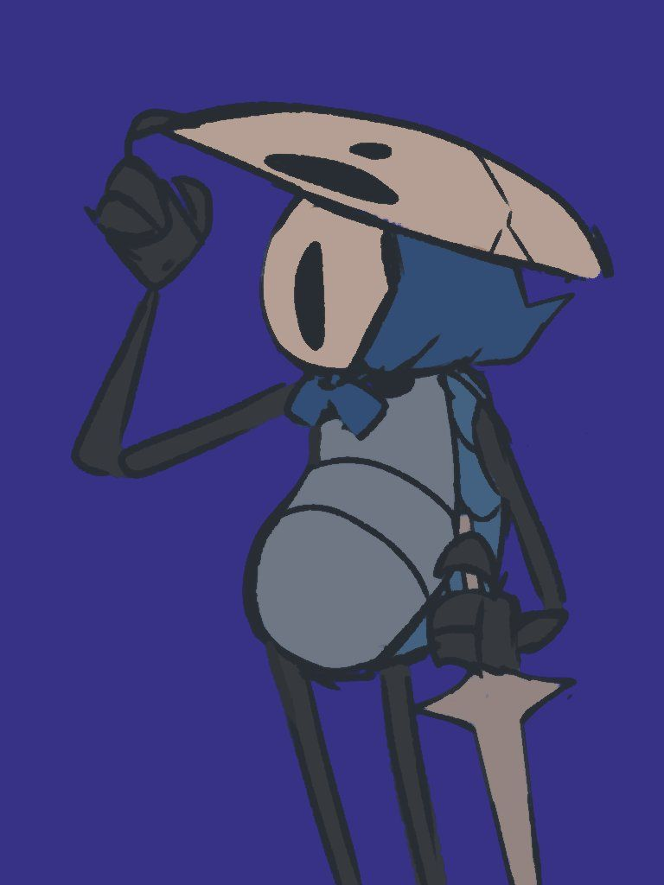

Administrador de Datos
Enero 2025 - Presente
Gestión de registros históricos en los Archivos de la Maestra. Optimización de sistemas de indexación para el conocimiento antiguo del Reino.

Mi carrera comenzó en los Archivos de Monomon, donde la integridad de la información era una cuestión de supervivencia. Tras años analizando el colapso de estructuras que se creían eternas, desarrollé una obsesión por la resiliencia. Entiendo que la complejidad innecesaria es el primer paso hacia la entropía, por lo que trato la legibilidad del código como una forma de respeto hacia quienes vendrán después. No me interesa el código que simplemente funciona hoy; me dedico a construir arquitecturas lógicas capaces de resistir el paso del tiempo y la degradación. Mi meta es crear sistemas que no requieran de un guía para ser descifrados, sino que su propia estructura sea el testimonio de su propósito. Mi enfoque combina la precisión del archivista con la mentalidad pragmática de quien ha tenido que navegar por el caos de sistemas en ruinas.
Enero 2025 - Presente
Gestión de registros históricos en los Archivos de la Maestra. Optimización de sistemas de indexación para el conocimiento antiguo del Reino.
Junio 2024 - Diciembre 2024
Mantenimiento de la red de transporte de Ciervos. Soporte técnico en bases de datos SQL para rutas y estaciones subterráneas.
Enero 2024 - Mayo 2024
Desarrollo de sitios estáticos para pequeños negocios en Bocasucia, mejorando su visibilidad para viajeros y nuevos residentes.
Un servicio RESTful para consultar coordenadas exactas de bancos, estaciones de ciervo y puntos de interés en todo el mapa.
Ver en GitHubAplicación para monitorear la intensidad de la lluvia eterna y predecir inundaciones en los distritos bajos de la ciudad.
Ver en GitHubPrototipo de tienda online con carrito de compras funcional y pasarela de pago simulada para la venta de amuletos y máscaras.
Ver en GitHub